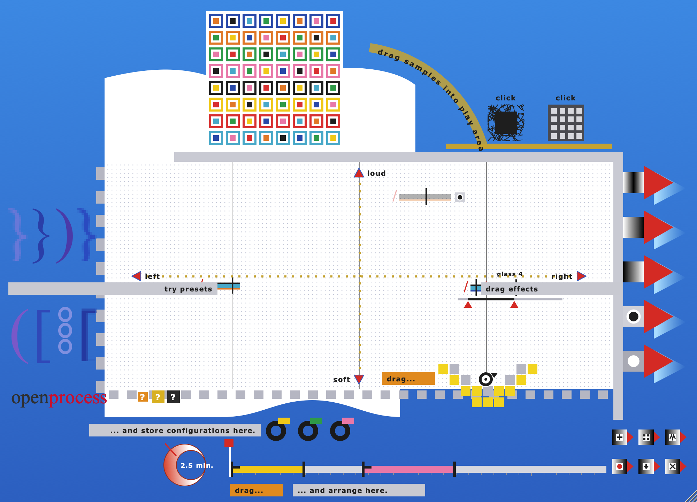
openprocess is a loop workspace. You drag sounds into a window, they loop, and you keep changing them while they play. You store what you hear as snapshots and lay those out on a timeline. It has no notes, scales, tempo or bars.
It is modelled on ovalprocess (2000) by Markus Popp, who records as Oval. Programmer Richard Ross wrote it for Popp. ovalprocess was software, a series of CDs, a lecture and three public sound terminals built with the Berlin architects skotoparc. It ran on a PowerMac in an illuminated Plexiglas terminal with a trackpad, open to anyone walking past. openprocess follows the operating manual of that installation: the same screen, from top to bottom, and the same rules.
openprocess comes in the FreakiePie bundle (with opensphere and Quell): one download per system from
the releases page of github.com/femifleming/freakiepie-bundle. On a Mac, Homebrew does it in one line:
brew install --cask femifleming/tap/openprocess.
| system | put the files here |
|---|---|
| macOS | openprocess.vst3 → ~/Library/Audio/Plug-Ins/VST3,
openprocess.component → …/Components, openprocess.vst → …/VST,
openprocess.app → /Applications. Universal: Apple silicon and Intel. |
| Windows | openprocess.vst3 → C:\Program Files\Common Files\VST3,
openprocess.dll (VST2) → your VST folder; openprocess.exe runs on its own. |
| Linux | openprocess.vst3 → ~/.vst3, openprocess.lv2 → ~/.lv2,
openprocess.so (VST2) → ~/.vst; openprocess runs on its own (ALSA or JACK). |
In a DAW, load openprocess on an instrument track. It plays as soon as something is in the play area, whether or not the transport is running. It has nothing to do with the song tempo. It has a stereo audio input, which only capture input and Input Thru use. Hosts that offer a side-chain input for instruments can feed it there.
The standalone app uses the audio device set under Options → Audio/MIDI Settings. It asks for microphone access the first time, for the capture function. Your work is saved when you quit and is back when you start again.
The window can be resized from its lower right corner, from 600 to 1600 pixels wide. The proportions stay fixed.
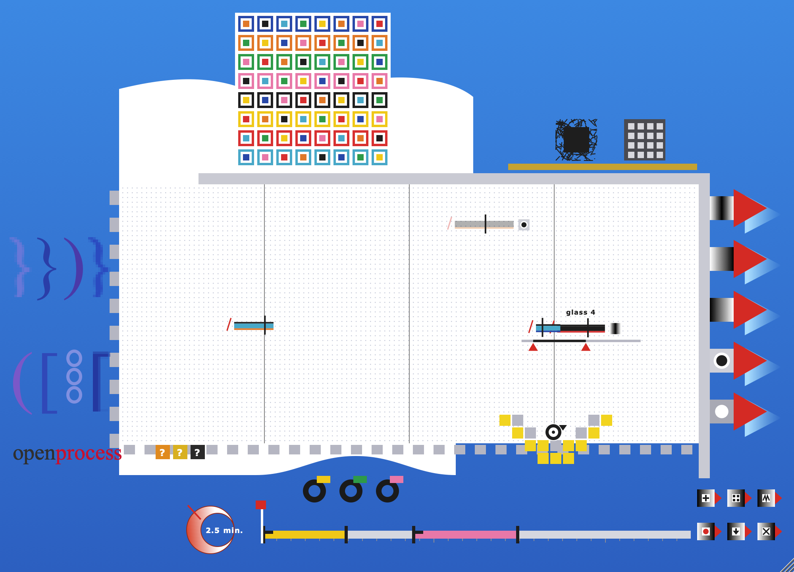
Messages such as "loaded 12 files" or "the play area is full" appear for a few seconds in a grey tag at the top left.
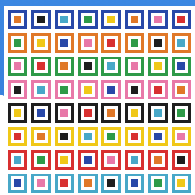
The browser holds the sound material: 64 loops in an 8 × 8 grid. The outer colour of a square shows its row, the family of sounds. The inner colour tells the columns apart.
Drag a square into the play area and let go. The sound starts looping at that spot. Outlined squares trail behind it as you drag. The same loop can be dragged in several times.
Click a square without dragging to select it (black frame). The skip again and capture input tools work on the selected square.
A pale square is still being made, for example just after loading files.
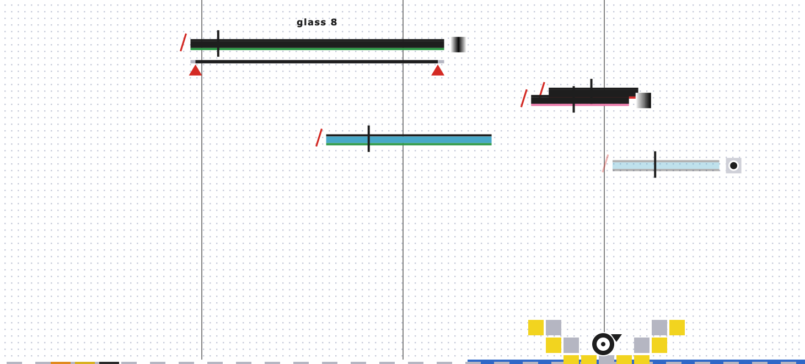
The dotted white window is where sounds play. A sound's position sets two things:
Each sound is drawn as a coloured bar. The bar's length shows how long its loop is. A black vertical pointer runs across the bar from left to right as the loop plays, again and again.
Drag a bar to move the sound. The change is heard as you move.
Throw a sound away by dragging it out of the play area. It stops.
Click a bar to select it. Its name appears above it. Below it, a grey strip stands for the whole sample, with two red pointers. The part between them is what loops. Drag the left pointer to move the start and the right pointer to move the end. A very short loop turns any sound into a buzz or a click pattern, the classic Oval texture.
Loop ends are crossfaded over about 6 ms so that they stay smooth.
Click on an empty part of the play area to deselect.
Up to 24 sounds can play at once.
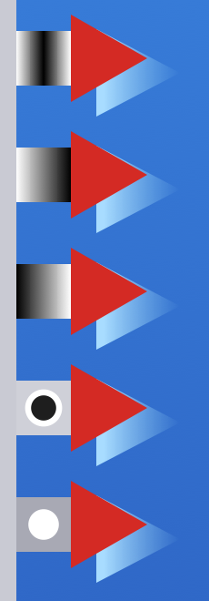
The five effects are on the right edge. Drag one onto a sound in the play area. It sticks to the sound as a small icon at the end of its bar. Each sound carries one effect at a time, and a new one replaces the old.
| icon (top to bottom) | effect |
|---|---|
| black in the middle | fade in / out: volume rises, then falls, over each loop |
| white → black | fade in: rises over each loop |
| black → white | fade out: falls over each loop |
| black dot | mute: the sound keeps running, silently |
| white dot | solo: only sounds marked solo are heard |
Fades follow the loop, so short loops with a fade turn into pulses. Muted or soloed-out sounds are drawn faded, and their pointers keep running.
To remove an effect, drag its icon off the sound, or drop the same effect on it again. Dropping the icon on another sound moves the effect there.
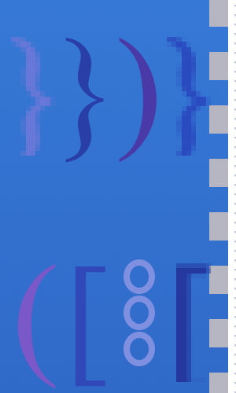
The eight brackets on the left are presets. Click one and the play area fills with 3 to 5 sounds, flying in from the bracket. Each bracket has a sorted pool: mostly sounds from one browser row, with some from two related rows. Which sounds, where and how long is never the same twice. Click again for another version.
A click replaces what is in the play area. Shift-click adds to it instead.
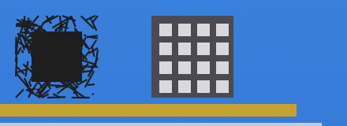
Above the play area on the right are two buttons that change everything in the play area at once, by chance.
Left (black scribble): new random loop lengths and start points for every sound, from 2 % to the whole sample.
Right (grey grid): new random positions, which is new panorama and volume for every sound. The sounds glide to their new places.
Use them as often as you like, one after the other or in turn.
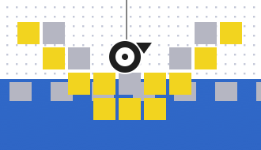
The yellow chequered shape at the bottom of the play area is the snapshot button. Click it and the whole play area is stored: every sound with its position, loop length and effect. The snapshot lines up below as a reel, a black ring with a colour tag.
There is room for 10 reels.
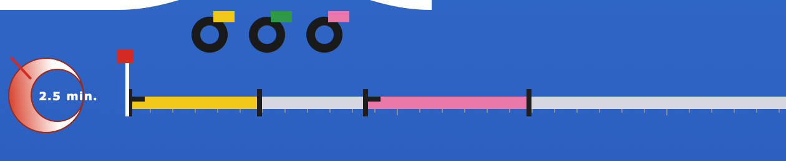
The timeline is the bar at the bottom. It holds the composition. Reels dropped on it become segments in the reel's colour: 20 seconds long, or an eighth of what the timeline shows when you are looking at a long stretch of it.
Segments may overlap. Where they do, both play together. Each segment keeps its own copy of the snapshot, so deleting the reel does not change it. Segments fade in and out over 30 ms at their edges. There is room for 256 segments.
The red crescent to the left sets the length of the composition, from 1 to 30 minutes. Drag up or right for longer, down or left for shorter. The scale is logarithmic: the first few minutes move in tenths, then halves, then whole minutes above ten.
Normally segments keep their places relative to the whole, as in the original, so a longer piece stretches them too. Hold shift while you drag the wheel and they keep their times in seconds instead: the end of the piece moves and nothing else does (segments past a new, shorter end are dropped).
Thirty minutes do not fit on 540 pixels, so the timeline zooms. Over the timeline:
When zoomed in, a thin overview strip under the bar shows the whole composition with a white window round
the part on screen. Drag the window, or click the strip to jump. The ticks under the bar follow the zoom, from
seconds to ten minutes, with times written as 9:30 or 10'. You can zoom in until ten seconds
fill the bar.
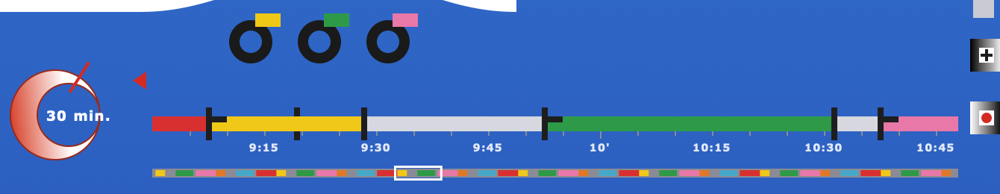
The red flag on its white stem is the play pointer. Click it to play from the flag to the end; playback then starts over from the flag, as a loop, until you click again. Drag the flag to start later. When the flag is off screen a small red arrow at that end shows where it is. While playing, the view pages along with the pointer.
All 64 loops are made by openprocess itself when it starts. Each row is one family. The first three are the timbres Popp set as the rule for the ovalprocess CD: guitar, organ and feedback. All loops use the same set of pitches (D, E, F♯, A, B, C♯), so any of them can be combined.
| row | family | what it is |
|---|---|---|
| 1 | organ | drawbar chords with a slow tremolo |
| 2 | guitar | plucked strings, loose arpeggios |
| 3 | feedback | sustained, drifting tones that swell and saturate |
| 4 | skips | clicks, blips, ticks and stuck-frame stutters |
| 5 | glass | FM bells, shimmering and decaying |
| 6 | low | soft bass swells |
| 7 | noise | swept filtered noise, hiss, crackle |
| 8 | skipped | organ and glass, heavily skipped |
Every loop is built the way a skipping CD plays: from fragments between a few milliseconds and a second and a half long. Some fragments repeat, the read position jumps ahead or back, and now and then a "read error" adds a drop-out, a frozen bit-crushed frame or a click. Columns run from clean on the left to heavily skipped on the right. Loops are 0.5 to 9 seconds long and none is a multiple of another, so loops drift against each other instead of falling into a common beat.
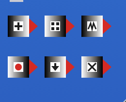
The six small buttons at the bottom right are additions that the installation did not have. Their names show when the mouse is over them.
| button | does |
|---|---|
| + load sounds | choose files or folders to chop into the browser |
| ▦ built-in sounds | restore the synthesized bank |
| ⋀⋀ skip again | re-chop the selected square with a new pattern and strength (or the square of the selected sound). A single file becomes a skipped loop. |
| ● capture input | the last 8 seconds of audio input, silence trimmed, into the selected square
(or the last square). It is saved as a WAV in ~/Music/openprocess/captures. |
| ↓ render to file | write a WAV file of the composition |
| × clear | empty the play area |
If the timeline has segments, the render runs from the play flag to the end of the composition. If not, it records
the play area for the composition length set on the wheel. The file is 48 kHz, 16-bit stereo, mixed at the current
Master level, and is written as it goes, so a 30-minute piece needs no more memory than a short one. The default place
is ~/Music/openprocess (your Music folder on Windows and Linux too). Rendering is faster than real time;
the message in the corner counts up the percent.
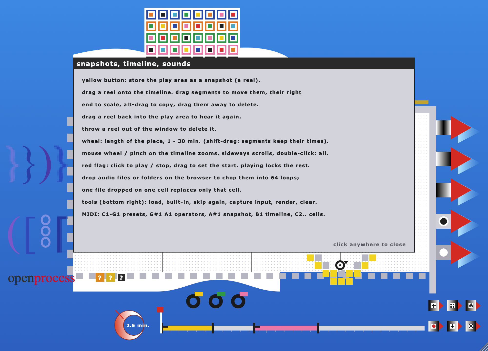
The three ? marks next to the word mark open help without stopping the sound:
Click the word mark to start the demo. A cursor works through every function on its own: it drags sounds, applies effects, uses presets and operators, takes snapshots, arranges and plays them. Any click ends the demo and puts back exactly what you had. As in the installation, the standalone app starts the demo by itself after three minutes without input when the play area is empty.
| note | number | action |
|---|---|---|
| C1 – G1 | 36 – 43 | presets 1 – 8 |
| G♯1 | 44 | logical operator: lengths |
| A1 | 45 | logical operator: positions |
| A♯1 | 46 | snapshot |
| B1 | 47 | timeline play / stop |
| C2 – D♯7 | 48 – 111 | browser squares 1 – 64: add at a random place, or remove if already playing |
Note names use middle C = C3 (Live, Logic). Notes act on note-on; velocity and note-off are ignored. While the timeline plays, only B1 has an effect.
| parameter | range | default |
|---|---|---|
| Master | 0 – 1 | 0.8 |
| Input Thru | 0 – 1 | 0 |
Both can be automated. Input Thru lets the audio input through to the output, for example to hear what you are about to capture. The output has a soft limiter just below full scale.
| item | value |
|---|---|
| browser | 64 loops (8 rows × 8 columns), 0.5 – 9 s each |
| sounds in the play area | up to 24 |
| volume | height squared; the bottom edge is silent |
| snapshots | up to 10 |
| timeline segments | up to 256; new segments 20 s |
| composition length | 1 – 30 minutes; the timeline zooms to 10 s |
| capture | last 8 s of input |
| render | WAV, 48 kHz, 16-bit, stereo, streamed to disk |
| user folder | ~/Music/openprocess |
| saved with the session | play area, snapshots, timeline, length, flag, how each square was made, parameters |
| window | 1000 × 720 at 100 %, resizable 60 – 160 % |
Ovalprocess sound installation, Dokumentation, Bedienungs- und Wartungshinweise, and Markus Popp, ovalprocess project text (Berlin, 7 April 2001), Ars Electronica archive · Markus Popp, ovalprocess US 2k lecture v0.2, Ars Electronica archive · Oval, "Ovalprocess", Leonardo 35/5, 2002 · Sam Inglis, "Markus Popp: Music As Software", Sound On Sound, October 2002 · Marc Weidenbaum, interview with Markus Popp, Disquiet / Pulse!, 1996. openprocess is an independent homage. It is not made, endorsed or distributed by Markus Popp or Oval.